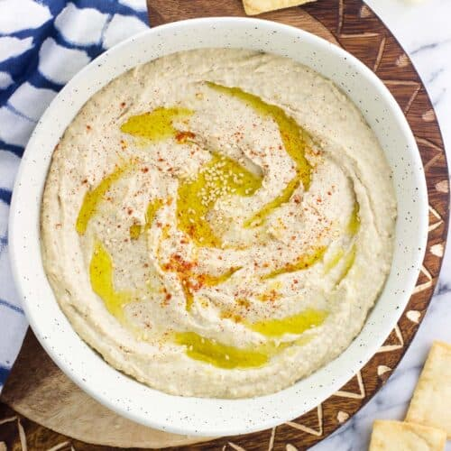

Roasted Garlic Hummus

The most delicious hummus ever!
This creamy, garlicky hummus can't be beat. What's the trick to getting silky, smooth hummus?
It's all in the order that you blend your ingredients. Many hummus recipes will tell you to toss
all of the ingredients in the food processor at once, but I find that this leads to coarse, and
sometimes lumpy hummus. For the best texture, follow the steps below.
Ingredients:
- 1 bulb of roasted garlic
- 1 can of garbanzo beans
- 1/4 cup of Tahini
- 1/4 cup of lemon juice
- 2 tbsp olive oil
- 1/2 tsp cumin
- 1/2 tsp sea salt
- 1/8 tsp cayenne (optional)
Steps:
- Put 1/4 cup tahini and lemon juice into the food processor, and process for about 30
seconds. Scrape the edges with a rubber spatula, and then process again for another
30 seconds.
- Add 2 tbsp of olive oil, the peeled roasted garlic, 1/2 tsp salt, 1/2 tsp cumin, and
a dash of cayenne if you'd like a little kick. Process for about 30 seconds, scrape
the sides, and then process again until completely smooth.
- Drain and rinse the can of garbanzo beans. While the processor is running, add the
garbanzos a little at a time. Add a dash of water to get the consistency just right.
- Feel free to add garnishes. I usually add an olive oil drizzle and paprika.